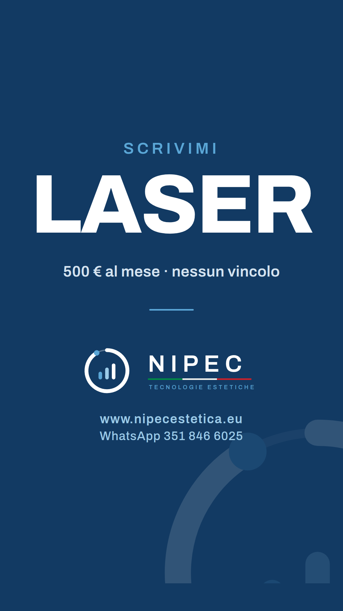
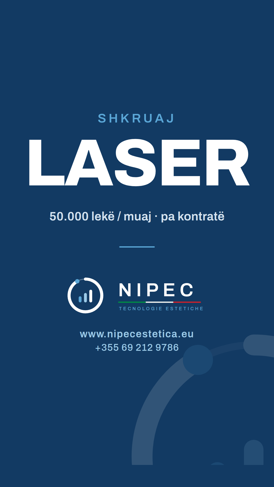
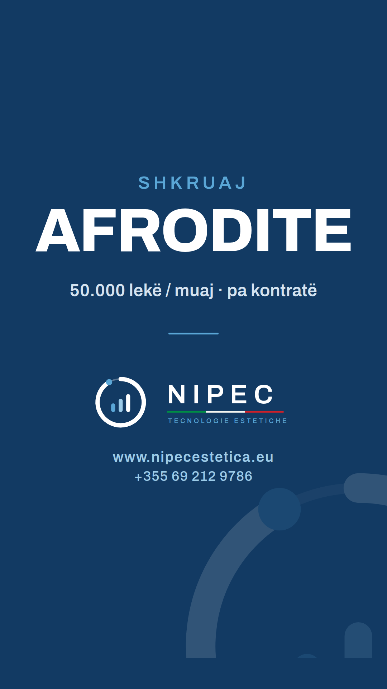

Laser Italia · Laser Albania · Afrodite Albania — tre per campagna · aggiornata a oggi
Niente numeri sul laser. «Fino a 16 diodi, fino a 2000 watt» è tolto. Ai contatti ora scriviamo «Laser Ares, 10 diodi, con IA»: è un messaggio uno a uno, e lì il modello si nomina. Nei reel no: resta la regola della Campagna 500, «un laser di ultima generazione con intelligenza artificiale». Zero numeri, quindi nessuna contestazione alla consegna.
«Te la cambiamo ogni due anni» non c'è più. Non era in nessun tuo documento e l'offerta di oggi non la contiene: dice «nessun vincolo di durata». Il reel 6 ora parla di quello che c'è davvero: la telecamera e l'IA.
Afrodite senza numeri. La scheda del costruttore dà quattro tecnologie (con il LED), il sito nuovo ne scrive cinque (con Micropulse e Low laser). Nei reel si dicono le tre che stanno su entrambe — cavitazione, radiofrequenza, vacuum — e nessun numero. Il reel 8 è riscritto.
«Tutto compreso» è tolto (reel 6 e 8): il corso DEMETRA da 250 € è opzionale. Compresa è la consegna in cabina.
Grafica del marchio nuovo. Testi a schermo e scheda finale seguono il libro del marchio. Le tre schede sono già pronte (sezione 6).
Il prossimo «primo del mese» è domenica. Chi firma adesso riceve la macchina il 1° novembre, che è una domenica. Nei reel non cambia niente (il calendario non porta né mese né anno), ma decidi tu come rispondi a chi scrive: consegna lunedì 2?
Il nome di Afrodite. L'offerta ai contatti dice «Afrodite Shape», il sito «Afrodite VS++». Nei reel resta «Afrodite», come nei copioni. Va bene?
| Formato | Verticale 9:16 · 1080×1920 |
| Durata | 15-22 secondi. Oltre, si perde l'estetista che scorre |
| I primi 5 secondi | Devono contenere il vantaggio intero. Se li guarda solo quelli, deve aver capito tutto |
| Audio | Si gira come se nessuno lo sentisse. Testo a schermo sempre |
| Chi parla | Italia: Giorgio. Albania: Uarda. Faccia vera, non voce fuori campo |
| Non si mostra | Pelle trattata, prima/dopo, percentuali, tempi di risultato |
| Il modello | Non si nomina, e non si dicono diodi né watt: «un laser di ultima generazione con intelligenza artificiale» |
| Chiusura | Sempre la stessa: la parola chiave da scrivere, poi la scheda finale (sezione 6) |
| Chi risponde | Italia: Giorgio, 351 846 6025 · Albania: Uarda, +355 69 212 9786. Entro quindici minuti |
Non è «un gancio nei primi 5 secondi». È: nei primi 5 secondi si vede un vantaggio che l'estetista riconosce come suo. Non la macchina, non il marchio, non il prezzo — un problema che ha davvero, detto con le sue parole.
Per questo ogni reel apre con una domanda o una frase scomoda, mai con «siamo NIPEC e noleggiamo laser».
| I 5 secondi | 0-5″ Primo piano di Giorgio, in magazzino, la macchina alle spalle. «Se la tua macchina si ferma domani mattina, quante clienti disdici?» QUANTE CLIENTI DISDICI? |
| Sviluppo | 5-15″ Cammina verso un'altra macchina, ci appoggia la mano. «Da noi, in 48 ore ne hai un'altra in cabina. Non chiudi un'ora, non disdici nessuno. Un laser fermo una settimana sono dodici clienti che saltano il turno. E la maggior parte non rientra più.» MULETTO IN 48 ORE |
| Chiusura | 15-20″ Fermo, guarda in camera. «500 al mese, senza firmare niente. Scrivimi LASER.» SCRIVI «LASER» |
| Serve | Due macchine nella stessa inquadratura, o una macchina e un furgone aperto |
| I 5 secondi | 0-5″ Mano che sfila un telo da una macchina ferma in un angolo. «Quante macchine hai visto prendere polvere in un angolo?» NON È LA MACCHINA. È CHE NESSUNO TI HA DETTO COME SI USA |
| Sviluppo | 5-16″ Si sfoglia il protocollo laser sul tavolo, pagina per pagina. «Non è che la macchina non funziona. È che nessuno ti ha dato il protocollo: cosa fai da quando la cliente entra a quando esce, con quali parametri, e ogni quanto la richiami. Con la nostra arriva scritto. E la formazione è compresa.» PROTOCOLLO SCRITTO FORMAZIONE COMPRESA |
| Chiusura | 16-21″ Chiude il fascicolo, lo appoggia. «Scrivimi LASER e te lo faccio vedere prima di decidere.» SCRIVI «LASER» |
| Serve | Il protocollo laser stampato. Ce l'abbiamo già — 6 pagine, IT |
| I 5 secondi | 0-5″ Giorgio con un calendario da muro in mano, segna il 1. «Te la porto il primo del mese. Me la paghi il trenta.» ARRIVA IL 1 LA PAGHI IL 30 |
| Sviluppo | 5-16″ Scorre il dito dal 1 al 30 sul calendario. «Trenta giorni di lavoro prima di tirare fuori il primo euro. Zero anticipo, zero cauzione, nessun vincolo. E se ad agosto chiudi, me la ridai: quel mese non paghi.» ZERO ANTICIPO · ZERO CAUZIONE NESSUN VINCOLO |
| Chiusura | 16-21″ Posa il calendario, guarda in camera. «500 al mese. Chiedi in giro se qualcuno te la dà così. Scrivimi LASER.» SCRIVI «LASER» |
| Serve | Un calendario da muro grande, senza mese e senza anno stampati: il reel regge tutti i mesi. Niente macchina: qui conta la faccia |
Parla Uarda. Copioni scritti in italiano, si traducono sul testo approvato
| I 5 secondi | 0-5″ Uarda, primo piano, in un centro vero. «Te la porto il primo del mese. Me la paghi il trenta.» ARRIVA IL 1 · LA PAGHI IL 30 |
| Sviluppo | 5-16″ La macchina dietro di lei, in cabina, accesa. «Trenta giorni di lavoro prima di tirare fuori il primo lek. Senza anticipo, senza cauzione, senza firmare nessun vincolo. E quando chiudi per le ferie me la ridai: quel mese non paghi.» PA PARADHËNIE · PA GARANCI PA KONTRATË |
| Chiusura | 16-21″ Guarda in camera. «50.000 lekë al mese. Scrivimi LASER.» 50.000 LEKË / MUAJ SHKRUAJ «LASER» |
| Serve | Un centro vero, non il magazzino. Meglio se con una cliente sul lettino, vestita |
| I 5 secondi | 0-5″ Uarda che spegne una macchina. Schermo nero del display. «Fai una domanda a chiunque ti noleggi una macchina: se si ferma, in quanto tempo ne ho un'altra?» FAI QUESTA DOMANDA A CHIUNQUE |
| Sviluppo | 5-16″ Stacco: furgone che si apre, macchina che scende. «Da noi: 48 ore. Non chiudi un'ora, non disdici una cliente. Perché un laser fermo una settimana sono dodici clienti che saltano il turno — e la maggior parte non rientra più.» 48 ORË |
| Chiusura | 16-21″ «Il rischio non è tuo. È nostro. Scrivimi LASER.» RREZIKU NUK ËSHTË YTI SHKRUAJ «LASER» |
| Serve | Il furgone. È l'immagine che vale più di mille parole |
| I 5 secondi | 0-5″ Mano che toglie la pellicola protettiva da un display nuovo. «Un laser di quattro anni fa non è lo stesso laser.» E LA TUA, DI CHE ANNO È? |
| Sviluppo | 5-17″ Dettagli: display touch che si accende, manipolo in titanio, la telecamera. «La nostra è di ultima generazione: la telecamera guarda la pelle e l'intelligenza artificiale ti propone i parametri. Decidi sempre tu. Certificata in Italia, con MDR attivo.» KAMERË + IA CE ITALIANE · MDR AKTIV |
| Chiusura | 17-22″ «50.000 lekë al mese, senza vincoli. Scrivimi LASER.» SHKRUAJ «LASER» |
| Serve | Una macchina nuova, ancora imballata. La pellicola che si stacca è il piano più forte del reel |
| I 5 secondi | 0-5″ Macchina coperta da un telo, in un angolo, luce bassa. «Quante macchine hai visto finire così, dopo tre mesi?» NON È CHE NON FUNZIONA |
| Sviluppo | 5-17″ Si scopre la macchina, si accende. Sul tavolo il protocollo e la scheda di cabina. «È che nessuno ha dato alla titolare il protocollo: cosa si fa, con quali parametri, in che ordine, e quante sedute. Con la nostra arriva il metodo DEMETRA: ciclo di 10-12 sedute, scheda di valutazione, protocollo pagina per pagina. E l'assistenza sempre.» PROTOKOLLI · SKEDA · TRAJNIMI |
| Chiusura | 17-22″ «50.000 lekë al mese, senza vincoli. Scrivimi AFRODITE.» SHKRUAJ «AFRODITE» |
| Serve | Il protocollo Afrodite e la scheda di cabina stampati. Ce li abbiamo |
| I 5 secondi | 0-5″ I manipoli allineati sul lettino. Mano che li tocca uno a uno. «Più tecnologie. Una macchina sola. Una rata sola.» SHUMË TEKNOLOGJI 1 MAKINË |
| Sviluppo | 5-16″ Un primo piano per ciascuno, il nome a schermo mentre lo si prende in mano. «Cavitazione. Radiofrequenza. Vacuum. Rimodellamento, cellulite, ritenzione, tono — con una macchina che ti arriva il primo del mese e la paghi il trenta.» KAVITACION · RADIOFREKUENCË VAKUM |
| Chiusura | 16-21″ «50.000 lekë al mese, senza vincoli. Scrivimi AFRODITE.» SHKRUAJ «AFRODITE» |
| Serve | I manipoli, luce radente. Niente pelle: solo i manipoli |
| I 5 secondi | 0-5″ Uarda con un foglio di contratto in mano. Lo gira: è bianco. «Senza firmare nessun vincolo. Chiedi in giro se qualcuno te la dà così.» PA KONTRATË |
| Sviluppo | 5-17″ Elenco a schermo, una voce alla volta, mentre lei le dice. «Nessun anticipo. Nessuna cauzione. Nessun vincolo. La paghi dopo trenta giorni di lavoro. Se si ferma, in 48 ore ne hai un'altra. Formazione compresa. E quando chiudi per le ferie, me la ridai e quel mese non paghi.» 0 PARADHËNIE · 0 GARANCI 0 KONTRATË · 48 ORË |
| Chiusura | 17-22″ «50.000 lekë al mese. Scrivimi AFRODITE.» SHKRUAJ «AFRODITE» |
| Serve | Un foglio bianco. Non un contratto vero: l'immagine è «non firmi niente» |
I nove reel usano la stessa manciata di inquadrature. Si gira una volta sola e si monta nove volte.
| # | Inquadratura | Serve a |
|---|---|---|
| 1 | Primo piano di chi parla, fondo pulito | tutti e nove |
| 2 | Macchina in cabina, accesa, display illuminato | 1 · 4 · 6 · 7 |
| 3 | Furgone che si apre, macchina che scende | 1 · 5 |
| 4 | Macchina coperta da un telo in un angolo, luce bassa | 2 · 7 |
| 5 | Pellicola che si stacca dal display nuovo | 6 |
| 6 | Protocollo stampato che si sfoglia sul tavolo | 2 · 7 |
| 7 | Calendario da muro, dito che va dal 1 al 30 | 3 · 4 |
| 8 | I manipoli Afrodite allineati, luce radente | 8 |
| 9 | Dettagli laser: manipolo titanio, telecamera, touch | 6 |
| 10 | Foglio bianco girato verso la camera | 9 |
| 11 | Scheda finale (PNG pronta, due secondi in coda) | tutti e nove |
Il furgone che si apre — è il muletto, senza doverlo spiegare.
La pellicola che si stacca — è «nuova», senza doverlo dire.
Il telo sulla macchina in un angolo — è la paura che ha già, detta senza accusarla.
Se si gira una cosa sola, si girano queste tre.
Stacco ogni 2-3 secondi nei primi cinque. Testo a schermo che entra con la parola, non prima. Nessuna musica sopra la voce: sotto, bassa. Sottotitoli sempre, anche nella lingua in cui si parla.
La chiusura è identica in tutti e nove — la parola chiave, grande, ferma due secondi. È quella che fa scrivere.
Testi a schermo: Archivo grassetto, bianco, su una banda blu profondo (#123A63) quando l'immagine sotto è chiara. Mai sopra la pelle, mai effetti, mai tricolore. Il logo non compare nei primi cinque secondi: solo nella scheda finale.
Nel documento della Campagna 500 una cosa blocca l'accensione: la pagina NIPEC deve avere almeno sei pubblicazioni prima di spendere un euro in sponsorizzate. Una pagina vuota che chiede soldi non riceve risposta. I nove reel sono quelle pubblicazioni: in tre giorni ne escono sei.
| Giorno | Italia | Albania |
|---|---|---|
| 1 | Reel 3 · Arriva il 1. La paghi il 30 | Reel 4 · Arriva il 1. La paghi il 30 |
| 2 | Reel 1 · Se si ferma, non lavori | Reel 5 · Se si ferma, in 48 ore ne hai un'altra |
| 3 | Reel 2 · Una macchina che non sai usare è un mobile | Reel 7 · Dopo tre mesi finisce in un angolo |
| poi | Reel 6 (laser), 8 e 9 (Afrodite), uno al giorno | |
Si parte dai due che dicono l'offerta intera nei primi cinque secondi (3 e 4), poi il muletto, poi il metodo. Budget, pubblico e sequenza dei test restano quelli della Campagna 500.
Fondo blu profondo, la parola chiave in bianco, il prezzo, il logo negativo, il sito e il numero. Il contenuto sta nella fascia centrale: i primi 250 e gli ultimi 340 pixel li copre l'interfaccia di Instagram. Si mette in coda a ogni reel, ferma due secondi.
| File | Per i reel |
|---|---|
| scheda-finale-LASER-italia.png | 1 · 2 · 3 — «Scrivimi LASER», 500 € al mese |
| scheda-finale-LASER-albania.png | 4 · 5 · 6 — «Shkruaj LASER», 50.000 lekë / muaj |
| scheda-finale-AFRODITE-albania.png | 7 · 8 · 9 — «Shkruaj AFRODITE», 50.000 lekë / muaj |


